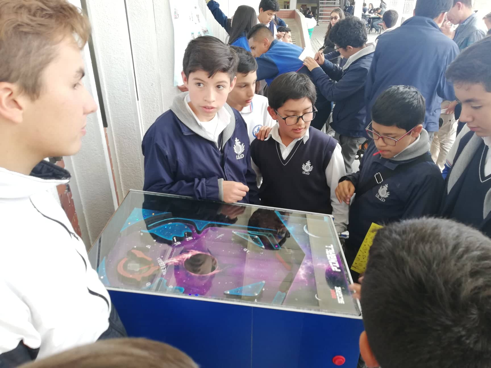

Investigación
Recycling of lids with a game device in the CBSJD. (INSERT LID)
A modo de investigación se hace como ya se ha mencionado en el CBSJD. en el cual se recolectaron los datos que nos permitirá ver la viabilidad del proyecto.
Mencionar que solo se mostraran los aspectos importantes, por lo tanto se saltaran secciones que se encuentran en el documento original.
resumen
El trabajo de recolección de productos plásticos en el CBSJD (Colegio Bilingüe San Juan de Dios). es un trabajo que busca mejorar las anteriores formas tradicionales y de la recolección de productos para el reciclaje de tapas, la implementación de una nueva alternativa de recolección. Por estos métodos arcaicos que en su presentación logran que la práctica del proceso sea algo agotador para todos los miembros de la comunidad de la CBSJD, la nueva ideología introduce el tema de los juegos árcade para la recolección de tapas a través de la introducción del objeto, que activa el mecanismo del juego de modo que ayuda a reciclar los subproductos de las presentaciones plásticas, por lo cual se espera mejorar el promedio de la recolección de tapas diarias.
abstract
The work of recollection of plastic products into CBSJD (Colegio Bilingüe San Juan de Dios). it is a work that search improve the previous methods traditional and the recollection of products to the recicling of lids, the implementation of a new way of recollection. For this methods archaic in this presentation achieve the practice of this procces be something exhausting to the members of the CBSJD comunity. The new ideology introduce the topic of the arcade games to the recollection of lids througt the introduction of the object, that actives the mechanism of the game in the way to help to recicling sub products of the plastic presentations, in that way it expect improve the avarage of the recollection of lids each day.
Introducción
La presente investigación aborda el tema de reciclaje de tapas, ya que estos hacen parte de los residuos que produce el hombre en su vida cotidiana, a su vez deshacerse de estos residuos contribuye a la contaminación y acumulación de desechos tanto orgánicos e inorgánicos. Pero más allá de tratar con la contaminación global, la siguiente investigación, aborda un contexto educativo-institucional, en el que se busca mejorar los métodos de reciclaje arcaicos, y por medio de la tecnología, hacer que este proceso sea más eficiente y accesible.
La preocupación inicial se evidencia en la falta de incentivos por parte de la comunidad educativa, que pese a tener un programa de reciclaje, se ha visto desmotivada por la misma aplicación, dicho proceso es conocido como proyecto “PRAE”, el cual ejecuta el reciclaje por medio de un fin académico, que es poco eficaz en el diario común y como habito en el plantel educativo.
Por medio del uso de la tecnología, mejorando los métodos de reciclaje enfocados a los subproductos plástico tipo (pet), los cuales son más comunes en productos envasados, que son altamente consumidos dentro de la institución. Incluso la existencia de fundaciones que se apoyan en la recolección de los productos plásticos facilitaría el proceso de reciclaje.
Planteamiento del problema
Mediante años en el Colegio Bilingüe San Juan De Dios la idea de recolección de tapas ha sido introducida por medio de un proyecto llamado PRAE pero que en su presentación produce una monotonía en los estudiantes del plantel educativo, dicha ideología ha producido que el concepto inicial de recoger tapas se haya olvidado y arribo a tal punto que los miembros lo ven solo como una nota más de la cual pueden sacar provecho para el desarrollo de su año escolar.
Pregunta problema
¿cómo mejorar el reciclaje de tapas en el CBSJD?
¿how to improve the lid recycling in the CBSJD?.
Objetivos
General
Incrementar del reciclaje de sub productos plásticos como lo son las tapas, mediante un juego electromecánico, en el plantel educativo CBSJD.
Especificos
- Idear una máquina que facilite la recolección de tapas plásticas en el proyecto educativo PRAE en el CBSJD.
- Generar una motivación al plantel educativo con respecto al reciclaje de plásticos y en mayor medida a las tapas pet a través de una estrategia relacionada con un elemento electromecánico.
- Recolectar datos e información acerca de la implementación de la maquina y la recolección tradicional en el CBSJD.
Objetive
General
Increase the recycling of plastic sub products, as the lids througth a game arcade device, in the educative community CBSJD.
Specific
- Ideate a machine that facilitate the recolection of plastic lids in the educative Project PRAE in the CBSJD.
- Generate a motivation to the educative comunity with respect to the recycling of plastics in the most measure to the lids (pet) througth of a strategy related with a pinball machine
- Recolectate data about the old methods of recolection, used previously and the machine to do a comparison.
Variables
Variable dependiente:
Incrementar el reciclaje de tapas plásticas.
Variable independiente:
Implemento que aportara a la recolección de tapas.
Justificación
La creación de una maquina electromecánica que incentive a procesos de reciclaje tales como lo son la recolección de tapas plásticas de las diferentes presentaciones de bebidas (pet) expendidas por parte de la cafetería del CBSJD y/o traídas por los diversos integrantes del CBSJD.
Mediante la recolección de tapas plásticas tipo pet por medio de un dispositivo electromecánico ubicado en un espacio accesible y común del espacio planteado en el CBSJD siendo este espacio el punto de encuentro y recreación para los miembros del CBSJD dichos elementos serán depositados de forma autónoma por parte de diversos miembros del plantel educativo.
Teniendo como objetivo el lograr el mejoramiento de actividades relacionas con la recolección de tapas plásticas en el CBSJD de forma tal que el reciclaje de tapas comúnmente llamado proyecto PRAE se aplique en actividades recreativas que incentiven al usuario a apoyar su propio desarrollo cognitivo y a su vez que ayude de forma autónoma con la protección del ambiente en una pequeña muestra de plástico, planteando así un nuevo esquema de desarrollo para futuras actividades relacionadas con el reciclaje de diversos elementos y que se tome en cuenta las iniciativas cognitivas y recreacionales emergentes en medio de las aulas de clase o inclusive las instalaciones de la institución.
Antecedentes
En Colombia a inicios del año 2019 por parte de la alcaldía de Bogotá fueron implementadas varias máquinas para la recolección de botellas plásticas que a cambio daba un pequeño descuento que podría ser aplicado en el pasaje de transporte público más específicamente en el sistema integrado de transporte en la ciudad de Bogotá, dicha iniciativa fue ubicada en puntos específicos de las troncales de Transmilenio y permite que las obras de reciclaje de diversos elementos sean premiadas con una tarifa de $50 pesos colombianos. “Anónimo (2019)”
“Este trabajo tiene un fundamento ambiental y social claro, que no sólo se enmarca en el estudio del impacto ambiental que causa el reciclaje de tapas plásticas en la Fundación SANAR, Fundación que se encarga del control y recolección de tapas Plásticas para niños, niñas y jóvenes que padecen de cáncer, esta organización lanzo su trabajo investigativo en el mes de Agosto del 2016 tras de una investigación comprendida entra el 2013 y el 2015, tiempo en el cual midieron la variación de reciclaje del producto plástico y lo midieron con el medidor ecológico 99. “Aguirre Arias, E. L. (2016).”
La idea de un concreto ecológico surge principalmente de la necesidad de controlar la contaminación que generamos a diario, se propone básicamente la utilización de envases plásticos, vidrios y metálicos en la fabricación de este concreto que deposite en su interior una parte de estos y mitigue el impacto que tienen sobre el ecosistema. La intención de fabricar un concreto al cual se le adicione una porción de material reciclable (PET, tapas de bebidas refrescantes y alcohólicas, vidrio), este Proyecto fue lanzado por parte de la Universidad nacional de Colombia, en el año 2017 y en el cual demuestra la necesaria búsqueda de adicionar a elementos como el concreto elemento reciclables los cuales permitirán que se logre un compuesto más duro y que permita una estructura más sólida y contundente. “Chacón, M., & Fabián, W. (2016)”
Metodología
Primero que todo fue necesario llevar a cabo un sondeo el cual permitiese saber que estrategia de recolección era más amigable y atractiva para los miembros del plantel educativo, dicha encuesta realizada en el grado noveno del año 2016 en el ese entonces ISJD, dicha encuesta determino que para los miembros del plantel educativo les era más llamativa la idea de una maquina tipo arcade que pudiese funcionar mediante la inserción de una tapa plástica tipo PET como moneda para jugar .
Tiempo después en el transcurso de los primeros meses del año 2019 se llevó acabo un sondeo al personal de cafetería y en la entrada de los descansos de bachillero el cual permitió saber cuántos productos con sub productos tipo pet eran vendidos a diario en comparación con la cantidad de los mismos que eran recogidos a la entrada de los descansos.
A mediados de agosto fue puesta a prueba una idea innovadora cuyo objetivo era incentivar la recolección de sub productos plásticos tipo pet, y que en el transcurso de su implementación demostró que a nivel institucional tenía una gran acogida.
En el transcurso de la implementación se notó la gran acogida que tenía el que una tapa les permitiese jugar en el elemento planteado anteriormente, además de hacer un paralelo de la recolección tradicional con la recolección en base a la maquina (durante 10 días).
Resultados de la invetigación
A partir de los resultados obtenidos se puede inferir que la implementación de la máquina fue un completo éxito debido a que en el primer día de aplicación logramos mejorar la recolección de tapas 32 veces a la toma de datos inicial por día, que en aquel entonces arrojo que los miembros de plantel educativo solo recogían 5 tapas diarias de forma autónoma, mientras que con el apoyo de la maquina se pudo mejorar la cifra a 150 tapas, periódicamente se vio como los miembros del plantel educativo se veían más y más motivados para traer tapas para poder jugar razón por la cual se proyecta un crecimiento de más de 45 veces la muestra obtenida de la forma tradicional.
A medida que avanzó el tiempo se observa como en cada día se recolectan más tapas con esta medida indicando que los miembros acuden en mayor medida hacia la máquina para poder jugar con la justificación de que era una tapa la moneda de cambio que les permitía jugar en mayor medida siempre y cuando se tuviese una cantidad de tapas considerable.
Para la aplicación se observa que de la forma tradicional solo es posible recolectar el 6,25% de tapas que es equivalente a 5 tapas diarias, más sin embargo se evidencia que el promedio mínimo de recolección con la forma en que se implementa el juego es del 200% de tapas (160) esto en base a las ventas realizadas por cooperativa diariamente.
Y si el promedio avanza hasta una semana se calcula una mejora del 2.382% de incremento de recolección de tapas semanales, en comparación de 47 tapas semanales de la forma tradicional, a la propuesta de la maquina de 1120 tapas totales. Incluso añadiendo que los estudiantes traían tapas de sus hogares, incitando al recilaje de tapas, de su consumo fuera de la institución.
Uno de los puntos sorpresa fue que la aplicación llego a tal nivel que los integrantes hacían filas extensas para poder jugar un rato en la máquina, y no solo estudiantes eran quienes aplicaban dicha iniciativa, pues en el transcurso de la aplicación se observó como los diversos profesores y miembros diversos del plantel educativo se acercaban a jugar y a platicar un poco del desarrollo de la máquina, logrando dar una buena perspectiva acerca de la maquina y su futuro en el plantel educativo.
Encuestas
Encuestas de calidad
En los ejercicios de aplicación del elemento electromecánico fueron elegidos al azar 20 diferentes jugadores a los cuales se les pidió llenasen una encuesta acerca del producto que estaban manejando al introducir su tapa, y que dieran su punto de vista acerca del porque fue mejor recibida esta propuesta a la tradicional.
De los anteriores datos se puede inferir que la motivación al recolectar las tapas surge porque se ve en la propuesta una nueva temática y algo que llamo la atención de los miembros de la institución desde el primer día de aplicación.
Concluciones
En conclusión, basándonos en los resultados de la recolección de tapas, nuestro objetivo de implementación y mejora del reciclaje en el CBSJD se ve evidenciado una mejora de 47 tapas semanales del método tradicional a comparación de la propuesta que fue de 1120 tapas semanales, con una mejora del 200%. Por lo tanto podríamos decir que su implementación fue exitosa y el incremento diario logro resultados muy elevados, por lo que la viabilidad del proyecto es muy alta.
El planteamiento de la actividad permite dinamizar procesos de recolección de tapas, logrando así que para los miembros del plantel educativo fuese más agradable la idea de reciclar, pues veían que por medio de una tapa podían tener un tiempo de ocio que les permitía tener un receso de sus labores diarias, gracias a encuestas realizadas se evidencio que para los miembros era más agradable esta idea debido a que no requerían de más cosas que una tapa plástica para poder interactuar con el artefacto, tal fue la recibida que tuvo el artefacto que logro ser 36 veces mayor en su conteo final al conteo plantado por la recolección tradicional de tapas que era considerada como proyecto PRAE.
También se hace presente la gran importancia de implementar el proyecto PRAE desde los cursos más pequeños, pues eran los que se veían más entusiasmados por la idea de la implementación del artefacto de forma continua, también porque la gran parte de tapas recogidas provenían del interés de los niños por poder jugar y competir con camaradería con sus diferentes compañeros para lograr una interacción optima con el elemento.
Bibliografías
- Aguirre Arias, E. L. (2016). Aporte al análisis sobre el impacto ambiental y el impacto social que genera el reciclaje de tapas plásticas en la fundación SANAR.
- anónimo, (2019) ” Reciclando empaques y botellas ahora los usuarios podrán recargar sus tarjetas
- Chacón, M., & Fabián, W. (2016). Concreto Ecológico a Partir de Material PET, Vidrio y Tapas de Bebidas Refrescantes y Alcohólicas.
- Ángel Danilo Florián Ardila, (2016-2018), Proyecto ambiental escolar INSTITUTO SAN JUAN DE DIOS
- Paula Ruggeri (2014), ¿Que es el pet y como se recicla?
- Inoquos (2018), Siete tipos de plástico y lo que debes saber sobre ellos
- Jorge Salvador Fernández Muñoz (2016), Electromecánica
- Gamerdic (2019), Diccionario online de términos sobre videojuegos y cultura gamer